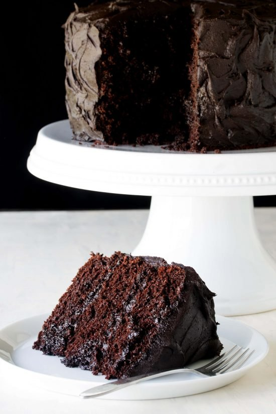
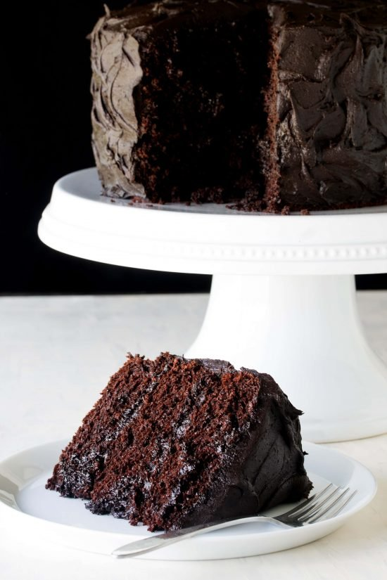
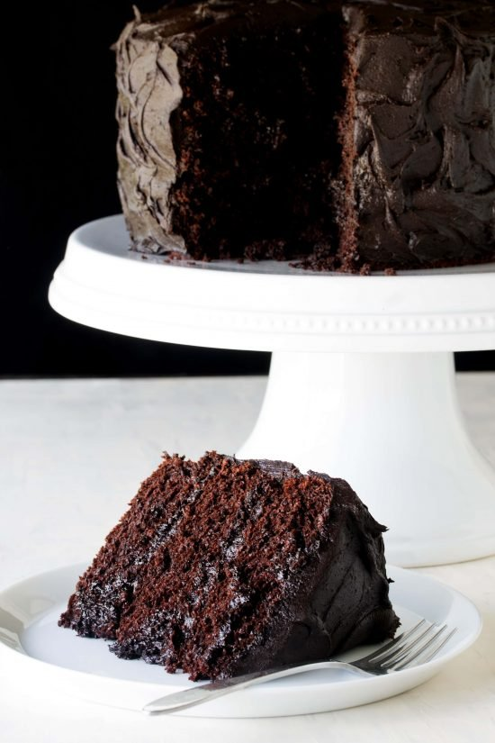
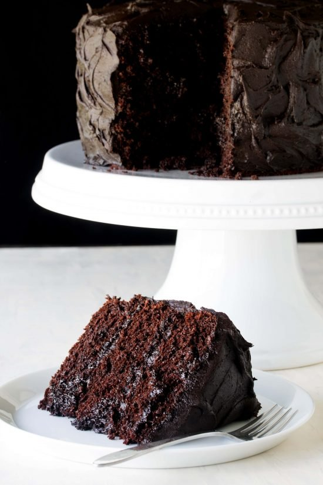

I have been searching for a great chocolate cake recipe for years. I have found it. My search has ended. I now have THE recipe. If you have ever seen the movie Matilda you will surely remember the scene where the boy is forced to eat the most delicious looking chocolate cake ever. I feel just like that boy when I eat this cake. It is my Matilda chocolate cake for sure. This cake is moist and has the perfect crumb. I cannot imagine making a chocolate cake using any other recipe. It is so easy to make and puts doctored cake mix recipes to shame. I’m eating a piece of the cake as I’m writing this, drooling all over my keyboard. It is insanely delicious. A decades search was worth the wait. Every…decadent…bite. Who wants cake?
For metric measurements, click on the metric tab. Bake at 176 degrees celsius in three 23 centimeter pans *Coffee can be used in place of the warm water. **For Cupcakes: https://thestayathomechef.com/chocolate-cupcake-recipe/
Calories: 767kcal | Carbohydrates: 119g | Protein: 8g | Fat: 33g | Saturated Fat: 21g | Cholesterol: 105mg | Sodium: 668mg | Potassium: 383mg | Fiber: 5g | Sugar: 91g | Vitamin A: 825IU | Calcium: 96mg | Iron: 3.7mg Course: DessertCuisine: AmericanKeyword: Chocolate Cake